神戸周辺
saúde
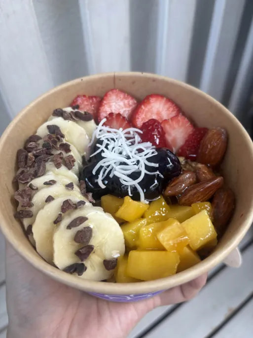
open 10:00～21:00
アサイーボウル
1300円
インスタで流れてきた
個人的に気になってた
アサイーボウルのお店！
ちゃんと食感もったりしてて
求めてたアサイーの味って感じ
乗ってるフルーツも甘くて美味しい
値段もアサイーの中では
結構安い気がする
REAL DINING CAFE
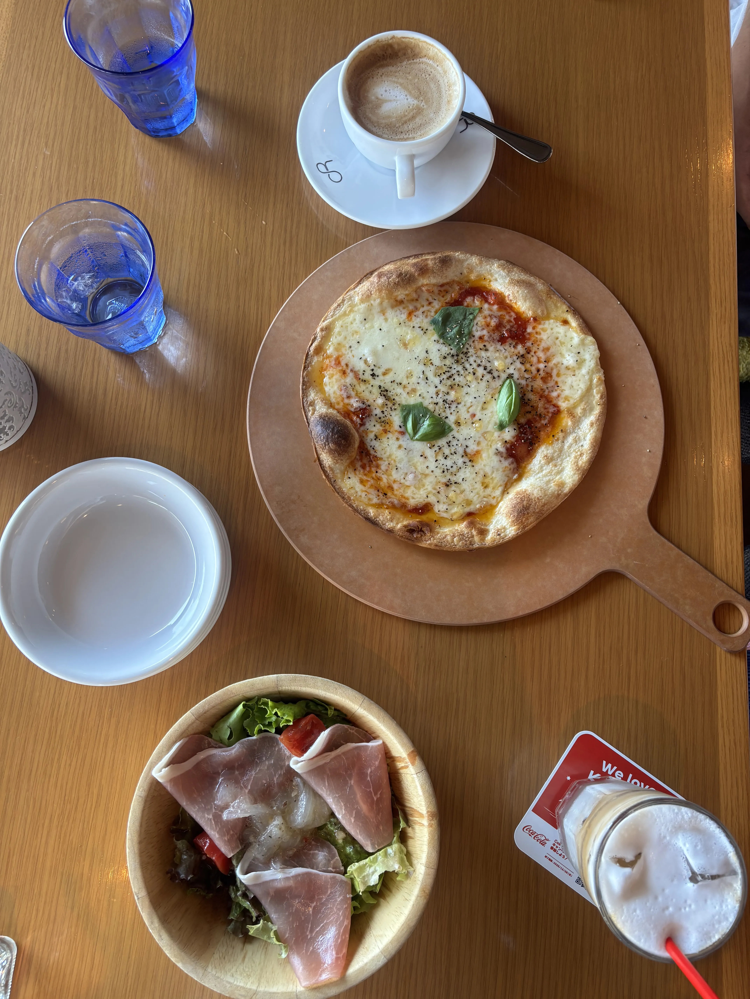
open 11:00～22:00
マルゲリータ
1520円
生ハムとオニオンマリネのサラダ
900円
アイスカフェラテ
670円
ホットコーヒー
550円
神戸ハーバーランドにあるカフェ
景色最高すぎる！！！
海を見ながらの食事が一番うまい
若干お高いけど
味もしっかりおいしかった
暑すぎてテラス出なかったから
次は絶対テラス行きたい
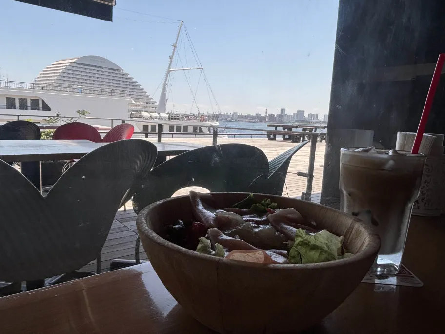
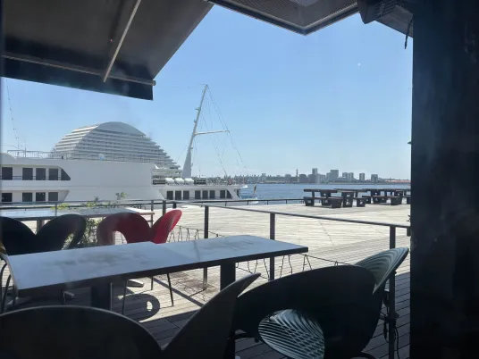
PORT TERRACE
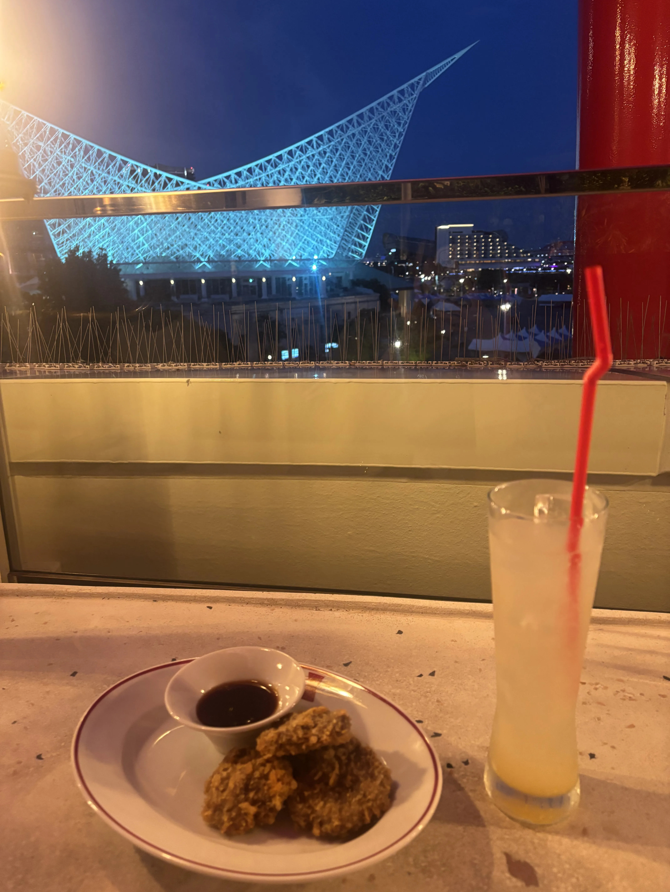
open 日～木祝 11:00～21:00
金土祝前日 11:00～22:00
淡路レモンスカッシュ
858円
神戸ビーフ＆神戸ポークのメンチカツ
1089円
ポートタワーの中のレストラン
夜景を見ながらディナー…
オシャレすぎる！
かぜもちょうどきもちよくて
気分良すぎた
でもさすがにお高い…
もちろん味はおいしかった
レモンスカッシュって
さっぱりして最高じゃない？
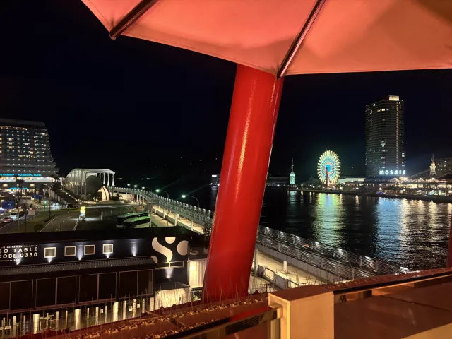
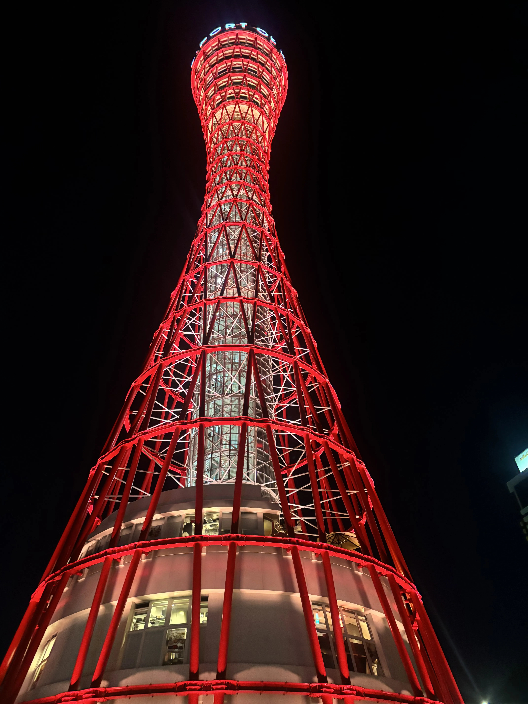
景色
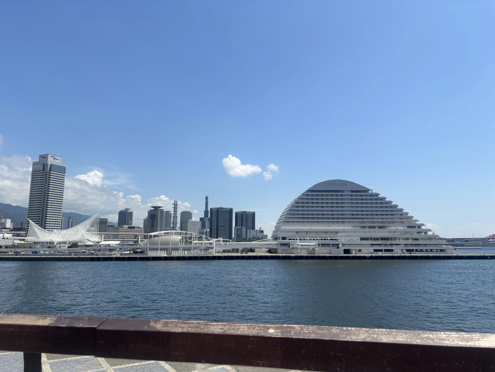
ハーバーランドからの海！
天気がいいのもあって綺麗だ…！
もうちょっと海に近づけるところもあったはず
目の前の大きいホテル人生で一回は止まってみたい
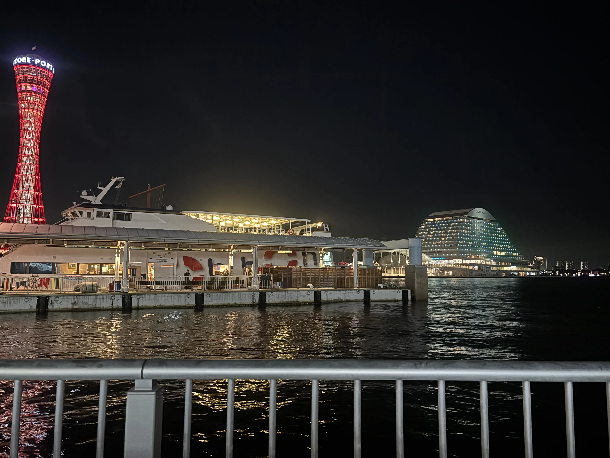
ポートタワー側からの海！
ライトアップが綺麗な建物が多くて綺麗…！
水面に反射する光が大好物
夜でも船とか乗れたりするのかな？
姫路周辺
姫路城
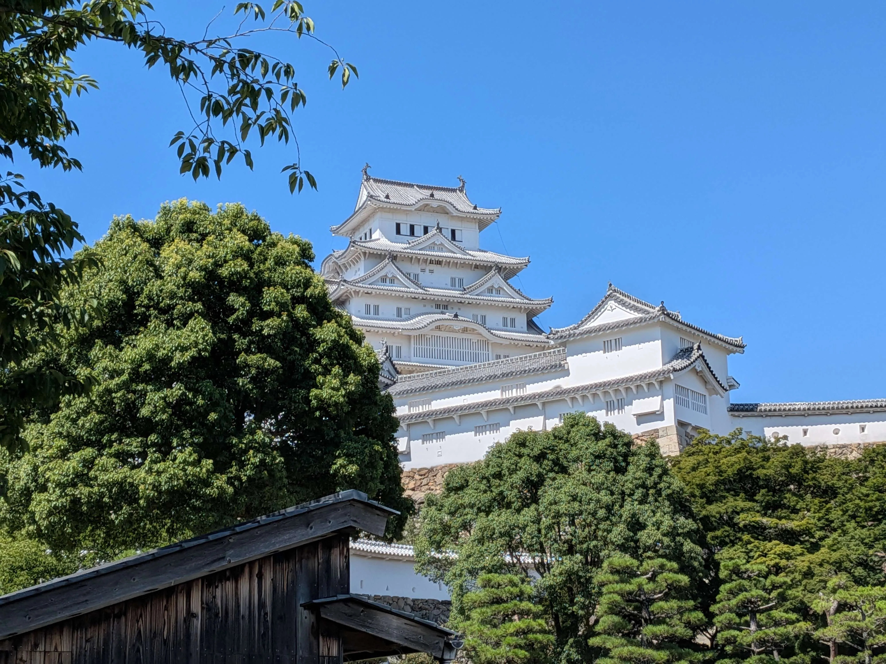
開城時間
9:00～17:00
入城料
大人 1000円
小中高生 300円
個人的に一番好きなお城！
真っ白できれいだ…
いろんなお城があるけど
姫路城って異質だよなぁ
近くで見ると思ったより大きくて
迫力がすごい
シンプルにお城からの景色も
めちゃめちゃ綺麗だった
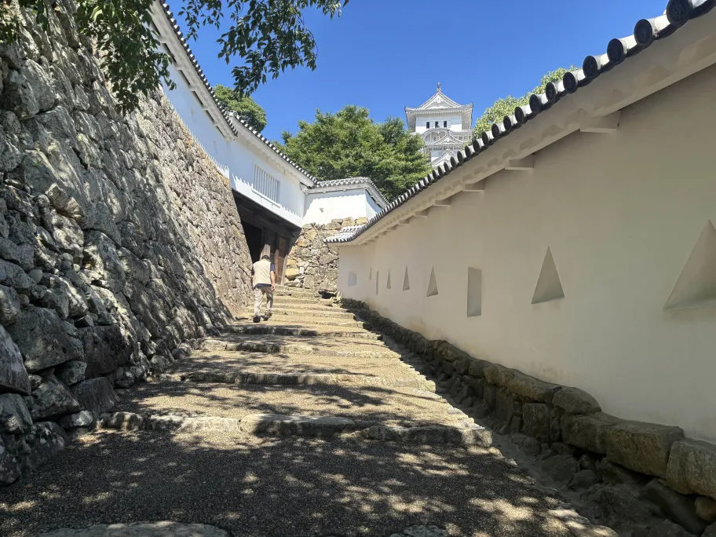
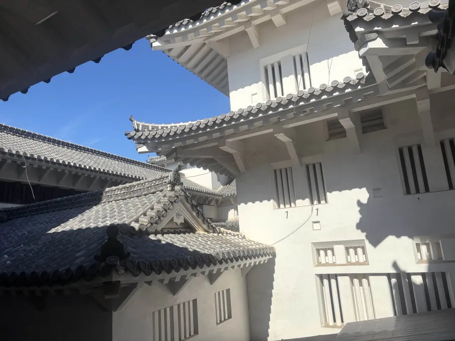
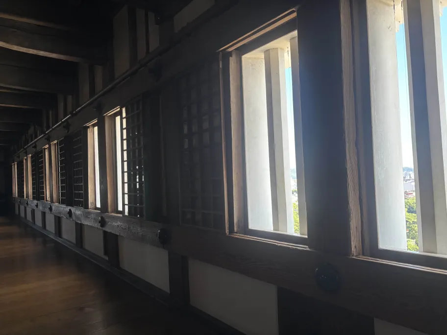
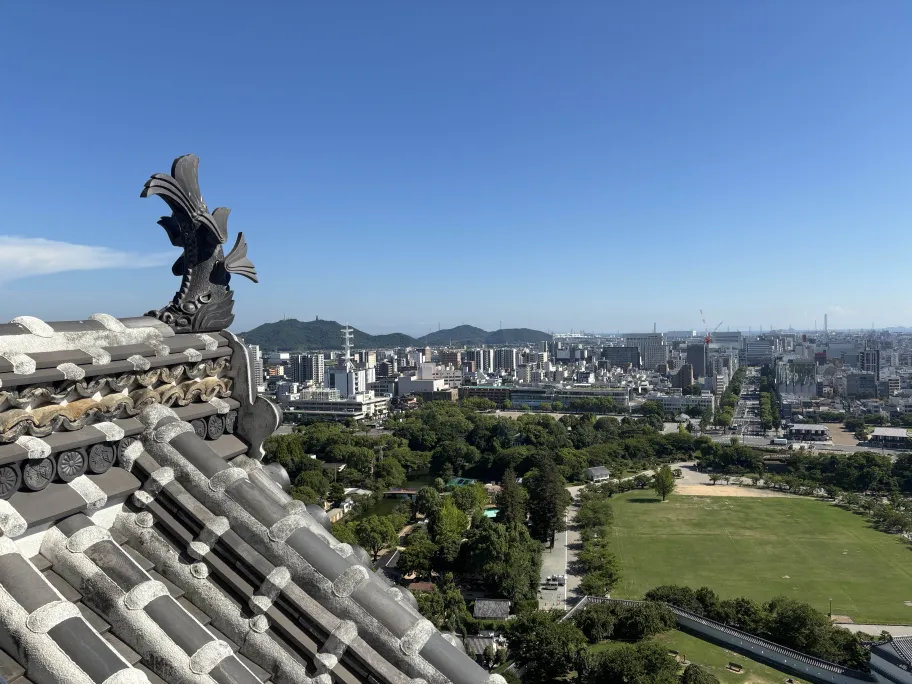
重次郎
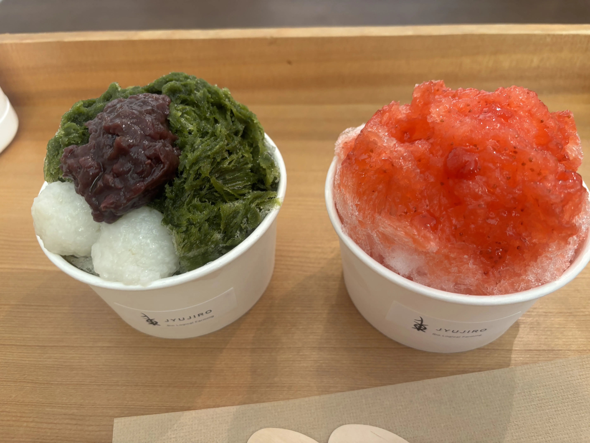
open 10:00～16:30
休日前 10:00～17:00
火曜定休
雫 抹茶 640円
雫 苺 640円
姫路駅から姫路城の間にあるお店
ふわふわのかき氷600円代で
食べられるの安くない？
暑すぎて死にそうだったから
まじで命救われた
かき氷だけじゃなくて
ほかのお菓子もいろいろあるっぽい